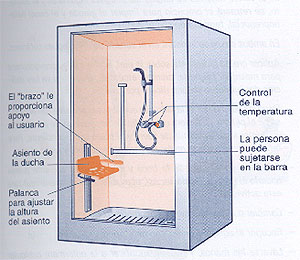
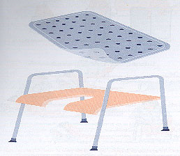
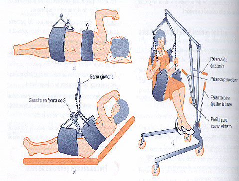

|
|  |
|
 |
| |
- Protocolo de actuación
En la ducha
- Explicar al usuario el procedimiento que se va a realizar y recordarle
las normas generales.
- Preparar el equipo necesario, colocándolo a su alcance.
- Después de asegurarse de que tiene todo lo necesario a
su alcance, se le ayudará a sentarse en un asiento de ducha
(si lo precisase), y se le preparará la ducha con el agua
a la temperatura adecuada.
- Puesto que en esta situación el usuario no suele necesitar
ayuda, el auxiliar de enfermería podrá realizar, entre
tanto, otras tareas.
- Al terminar, recoger el equipo, acompañar al usuario a
la habitación y avisar al personal de limpieza para que limpie
el cuarto de baño.
En la bañera
- Después de preparar el equipo, llenar la bañera
con agua caliente (comprobando la temperatura con un termómetro
de baño)
- Explicar al usuario el procedimiento que se va a realizar y recordarle
las normas generales.
- La colaboración que preste el auxiliar de enfermería
dependerá del grado de independencia de usuario.
- Debe tenerse en cuenta tanto la protección frente a lesiones
por sobrecarga en el auxiliar (utilización de grúas).
Como la necesidad de seguridad física y psicológica
que precisa el usuario.
- Ayudar al usuario a desnudarse y entrar en la bañera.
- Atender al usuario mientras realiza su aseo, observando su piel
y otros aspectos.
- Al finalizar, ayudarle a secarse, a aplicarse crema hidratante,
agua de colonia, a vestirse e instalarse de nuevo en su habitación.
- Recoger el baño y avisar al servicio de limpieza.
- Anotar las observaciones, si las hubiera, en la hoja de evolución
de enfermería o libro de observaciones, o comunicárselo
a la enfermera
|
| |
 |
|
|